Design
Dulce
Winner of Miami Silver ADDY
Dulce is baby pink food truck that parades around South Beach serving up milkshakes and a sweet perspective on life.
Roles: Designer, art director, copywriter
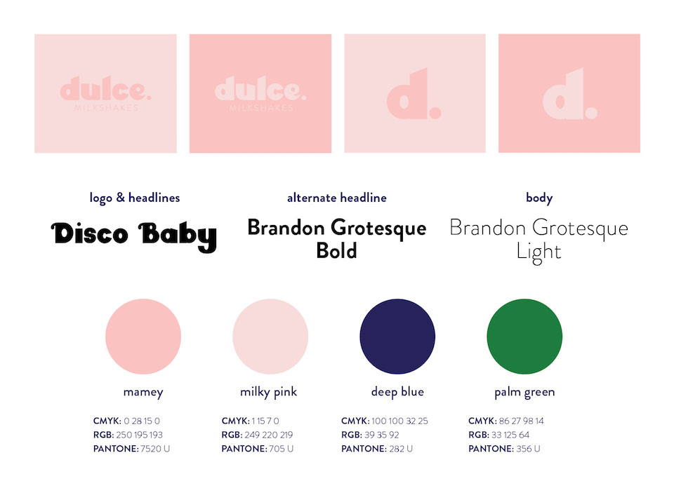 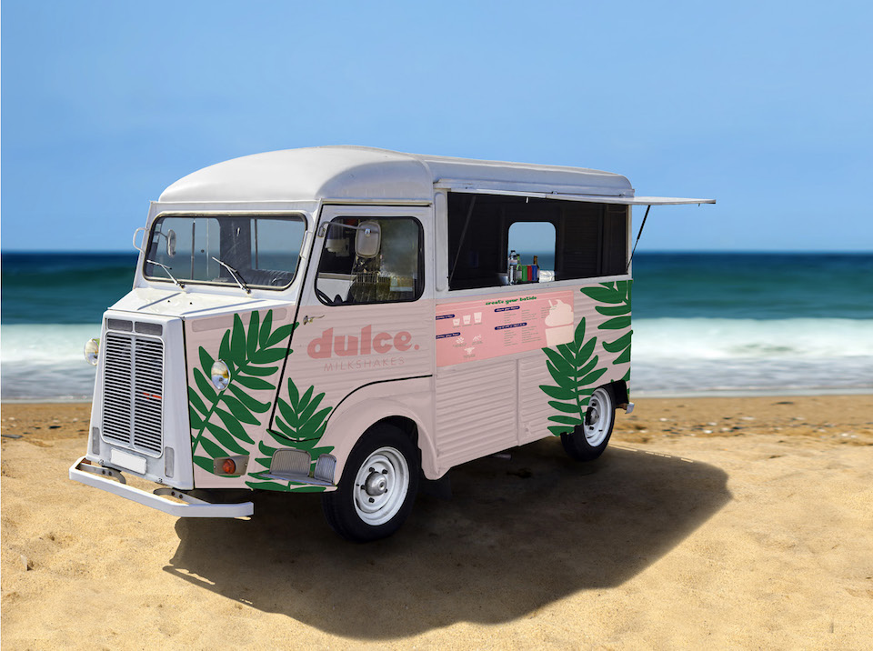 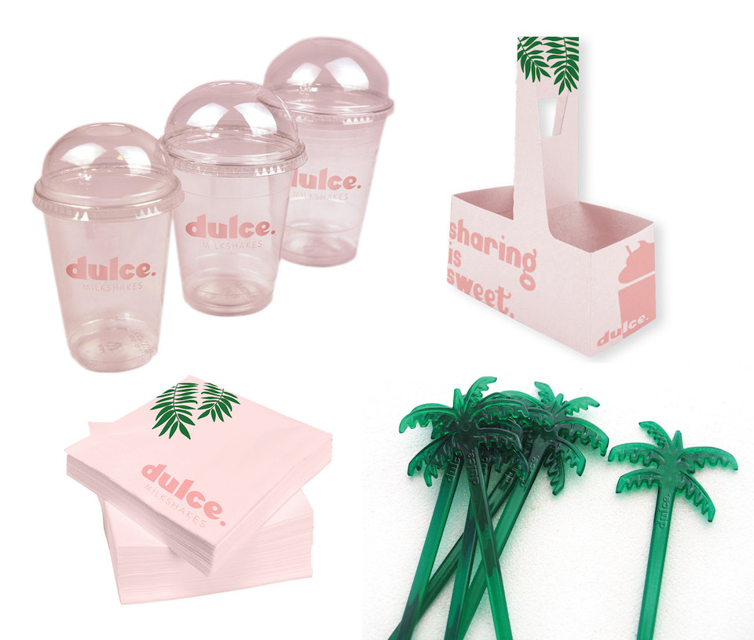 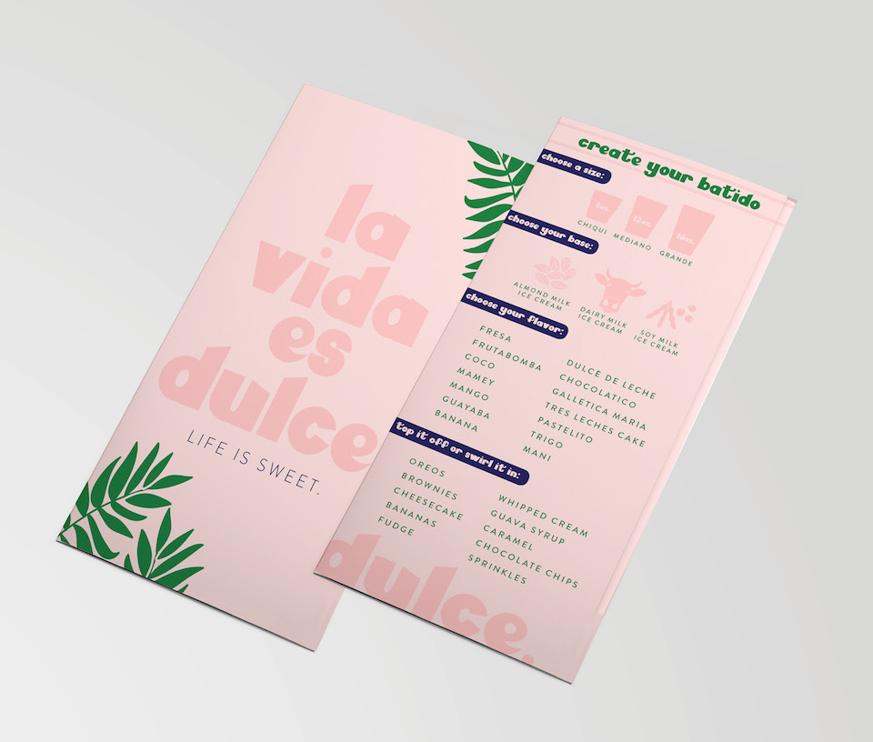Disco Baby
Inspired by the slap bass and groovy tunes of the 70s and 80s, I created a typeface called Disco Baby. It's only appropriate that the type specimen would be disco themed.
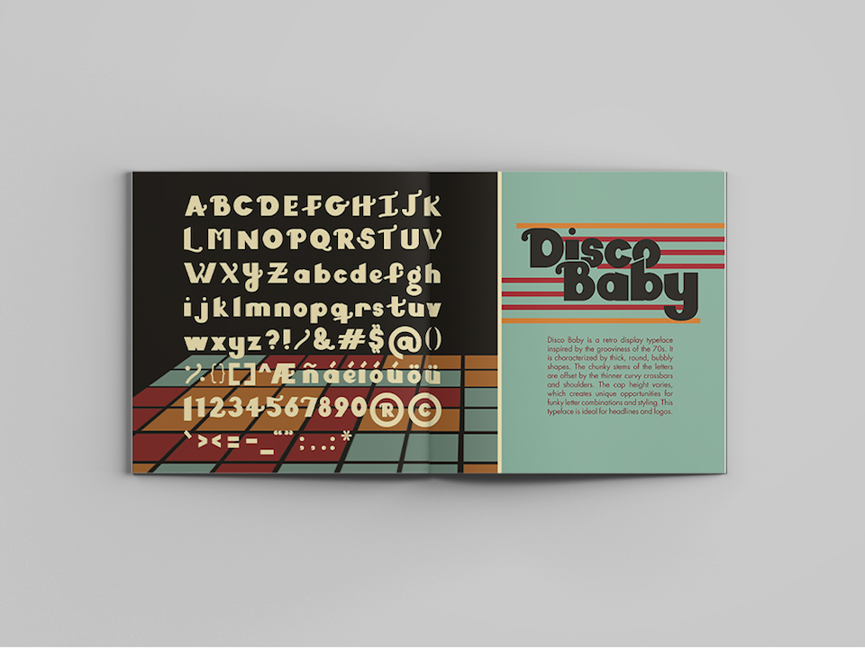 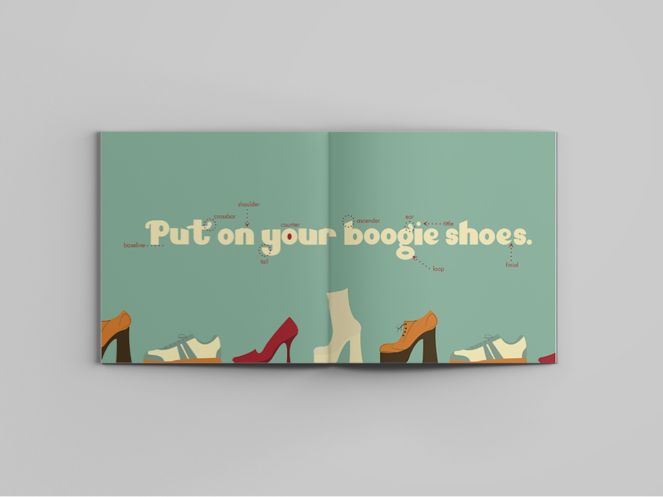 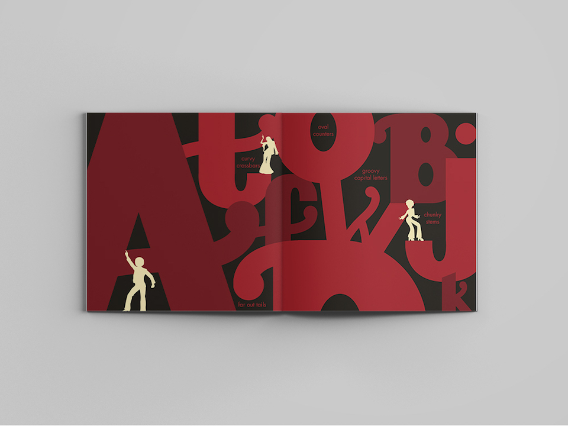 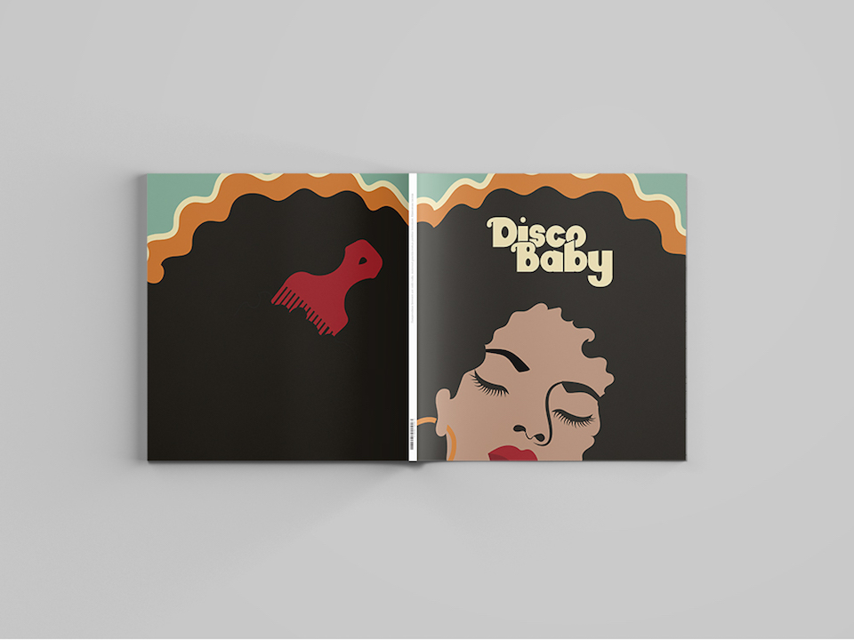Bobby Flay Burger
The problem: Potential Bobby's Burger Palace customers were unaware of the connection between Bobby Flay the chef and the restaurant.
The solution: Bring the Bobby Flay persona into traditional advertisements to raise awareness and enhance trust in the brand.
Role: Associate Creative Director, art director and photographer
Client implemented concept for launch of veggie burger.
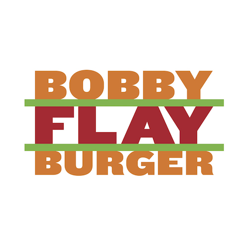
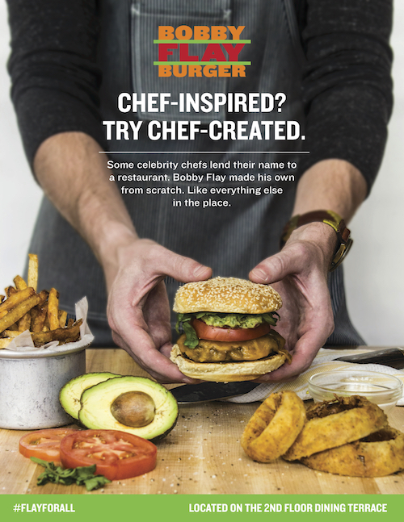
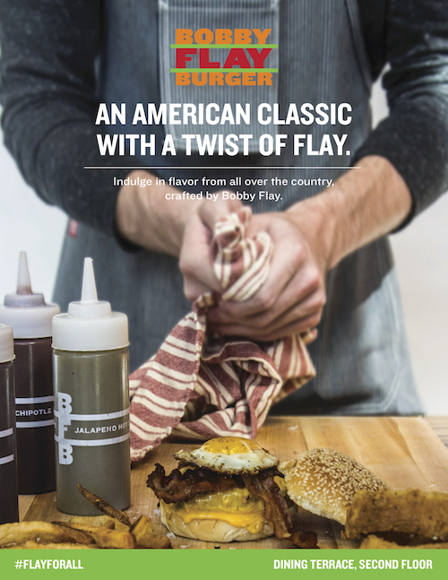
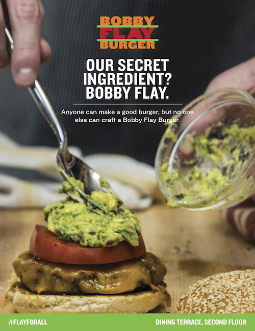
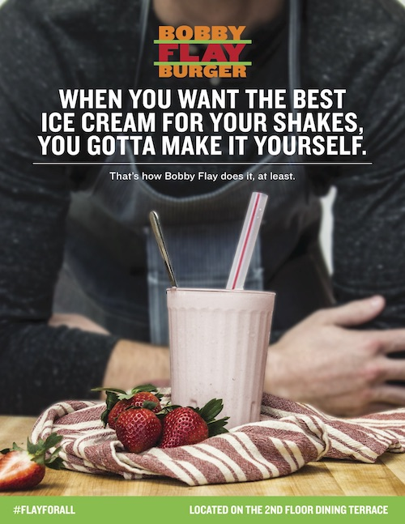